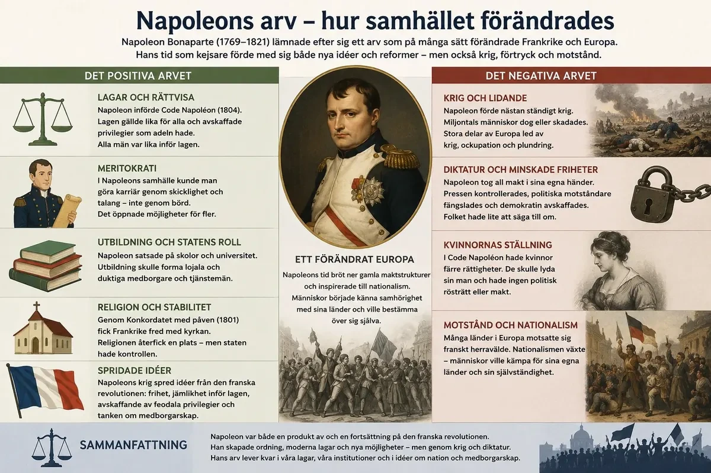

— revolutionens arvtagare och begravare: från general till kejsare —
År 1799 tog Napoleon makten genom en statskupp — ett olagligt eller odemokratiskt maktövertagande. Han skapade ordning efter revolutionens kaos och fick stöd av många fransmän. År 1804 krönte han sig själv till kejsare . Han satte själv kronan på sitt huvud — inte kungen’s representant, inte kyrkan. Han visade att makten kom från honom själv och den franska staten.
Den franska revolutionen började 1789 med krav på frihet, jämlikhet och folkets inflytande. Under revolutionen avskaffades ståndssamhället, kungamakten försvagades och till slut avrättades kungen Ludvig XVI. Men revolutionen ledde också till våld, inbördes konflikter och krig mot andra länder i Europa.
Efter flera år av oro längtade många fransmän efter ordning och stabilitet. De ville behålla vissa viktiga förändringar från revolutionen, till exempel att adeln och kyrkan inte längre skulle ha gamla privilegier. Samtidigt var många trötta på politiskt kaos, ekonomiska problem och krig. Det var i detta läge som Napoleon Bonaparte blev allt viktigare.
Napoleon var en skicklig militär som hade blivit känd genom sina segrar i krig. År 1799 tog han makten genom en statskupp. En statskupp betyder att någon tar makten på ett olagligt eller odemokratiskt sätt. Efter kuppen styrdes Frankrike inte längre som en verklig demokrati. Napoleon blev landets starkaste ledare. På så sätt brukar man säga att revolutionen tog slut, även om många av revolutionens idéer och förändringar levde kvar.
Till en början kallades Napoleon för förste konsul . Det betydde att han var den viktigaste ledaren i Frankrike. Han styrde landet hårt, men han skapade också ordning. Många fransmän accepterade honom eftersom han gav landet stabilitet efter revolutionens kaos.
År 1804 krönte sig Napoleon till kejsare . Det var en viktig symbolisk händelse. Frankrike hade gjort revolution mot kungens envälde, men nu fick landet återigen en ensam stark härskare. Skillnaden var att Napoleon inte byggde sin makt på gammal kunglig börd, utan på sin egen militära framgång och på stödet från många fransmän.
När Napoleon blev kejsare visade han att han ville stå över både kyrkan och den gamla adeln. Vid kröningen tog han själv kronan och satte den på sitt huvud. Det kunde tolkas som att hans makt inte kom från påven eller från Gud, utan från honom själv och från den nya franska staten.
Det ligger en paradox i själva början av Napoleons bana som är värd att stanna vid: en revolution som inletts med krav på folkets inflytande och avsky mot enväldet slutade med att lägga all makt i händerna på en enda man. Hur kunde det ske? Svaret säger något viktigt om vad revolutioner gör med människor.
Efter Robespierres fall styrdes Frankrike av Direktoriet, en svag femmannaregering som få litade på. Efter tio år av kaos — ekonomisk kris, politiskt våld, ständiga krig — längtade många fransmän inte längre främst efter frihet, utan efter ordning. Det är i den längtan Napoleon blir möjlig. När han i kuppen den 18 brumaire 1799 grep makten var det inte trots revolutionen, utan delvis på grund av den utmattning revolutionen skapat.
Men det avgörande — och det som skiljer Napoleon från den gamla ordningen — är varifrån hans makt kom. Ludvig XVI hade härskat genom börd och Guds nåde. Napoleon härskade genom armén, sin egen skicklighet och folkets stöd. Han var meritokratins man: en officer från enkla förhållanden på Korsika som stigit genom förmåga, inte genom stamträd. När han 1804 krönte sig till kejsare och själv satte kronan på sitt huvud i Notre-Dame, med påven reducerad till åskådare, var budskapet exakt detta: min makt kommer inte från kyrkan eller från börd, utan från mig själv och nationen.
Här ser man Napoleons dubbelhet redan från start. Han återinförde enväldet — men på revolutionens grund, inte på det gamla samhällets. Han bevarade dessutom revolutionens kärna i lag genom Code Napoléon (1804): likhet inför lagen för män, skydd för egendom, avskaffade feodala privilegier. Samtidigt cementerade samma lag kvinnans underordning under mannen. Napoleon var alltså varken den gamla ordningens återkomst eller revolutionens fullbordan, utan något nytt och motsägelsefullt — och den motsägelsen skulle prägla allt han gjorde.
År 1799 tog Napoleon makten genom en statskupp — ett olagligt eller odemokratiskt maktövertagande. Han skapade ordning efter revolutionens kaos och fick stöd av många fransmän. År 1804 krönte han sig själv till kejsare . Han satte själv kronan på sitt huvud — inte kungen’s representant, inte kyrkan. Han visade att makten kom från honom själv och den franska staten.
Napoleon var inte bara Frankrikes ledare. Han ville också göra Frankrike till Europas mäktigaste land. Under början av 1800-talet förde han krig mot flera europeiska stormakter, till exempel Österrike, Preussen, Ryssland och Storbritannien .
Napoleons arméer var mycket framgångsrika. De franska soldaterna var ofta välorganiserade och leddes av skickliga befäl. Napoleon själv var duktig på strategi , alltså att planera krig och använda sina styrkor på ett smart sätt. Genom många segrar tog Frankrike kontroll över stora delar av Europa.
I flera länder satte Napoleon sina släktingar eller lojala personer som ledare. På så sätt kunde han styra indirekt över stora områden. Men den franska erövringen handlade inte bara om militär makt. Franska idéer spreds också. I många områden försvagades gamla privilegier, ståndssamhället utmanades och nya lagar infördes.
Samtidigt väckte Napoleons makt motstånd. Många människor i Europa ville inte styras av Frankrike. De såg fransmännen som ockupanter. Därför började nationalism växa fram på flera håll. Nationalism betyder att människor känner stark samhörighet med sitt folk, sitt språk och sitt land.
En av Napoleons största svårigheter var Storbritannien . Britterna hade en stark flotta, och Napoleon lyckades inte besegra dem till sjöss. Därför försökte han i stället stoppa handeln med Storbritannien. Han ville att Europas länder skulle sluta köpa och sälja varor till britterna. Detta kallades kontinentalsystemet .
Napoleons erövringar brukar berättas som en rad lysande segrar — Austerlitz, Jena — men det verkligt intressanta är vad hans arméer bar med sig, och varför det till slut vände sig mot honom. För Napoleon förde inte bara krig; han exporterade revolutionen. Och just den exporten innehöll fröet till hans fall.
Där de franska arméerna drog fram avskaffades ofta feodala privilegier, infördes moderna lagar efter Code Napoléons mönster och öppnades karriärer för förmåga snarare än börd. Rent sakligt spred Napoleon alltså viktiga delar av revolutionens arv över Europa. Men han spred det med bajonetter, ockupation och genom att sätta sina egna släktingar på tronerna i erövrade länder. Och där ligger motsättningen: idéer om frihet och likhet levererades av en främmande armé som samtidigt utsög och styrde landet.
Det väckte en kraft som skulle bli en av 1800-talets mäktigaste: nationalismen. När folk i Tyskland, Spanien och annorstädes upplevde fransmännen som förtryckare, vaknade en ny känsla av samhörighet med det egna folket och landet — ett "vi" mot de franska inkräktarna. Ironin är total: Napoleon, som spred revolutionens universella idéer, blev därmed också den som väckte nationalismen som skulle underminera hans eget imperium och rita om Europas karta långt efter hans död.
Napoleon hade alltså byggt sitt välde på en omöjlig ekvation. Hans makt krävde ständiga segrar för att upprätthålla bilden av oövervinnlighet, och varje erövring skapade nya fiender och nya nationella motståndsrörelser. Ett imperium som bara kan hålla ihop genom att ständigt växa har inget stabilt viloläge. Frågan var inte om det skulle överanstränga sig, utan när — och svaret stavades Ryssland.
Napoleon hade svårt att besegra det brittiska flottvapänet. Därför försökte han stoppa handeln med ön — det så kallade kontinentalsystemet . När Ryssland bröt mot reglerna anföll Napoleon 1812. Det blev katastrof. Ryssarna drog sig tillbaka och använde den brända jordens taktik — de förstörde mat och resurser så armén inte kunde leva på landet. Vintern slog till. Soldaterna dog av kyla, svält och sjukdomar. Fälttåget mot Ryssland krossade Napoleons makt.
Ryssland följde inte alltid Napoleons regler, och konflikten mellan Frankrike och Ryssland växte. År 1812 samlade Napoleon en mycket stor armé och gick till anfall mot Ryssland. Detta blev ett av hans största misstag.
Ryssarna undvek ofta stora avgörande slag. I stället drog de sig tillbaka längre in i landet. När de drog sig tillbaka förstörde de matförråd, byar och resurser som den franska armén hade behövt. Detta kallas den brända jordens taktik . Napoleon lyckades nå Moskva, men staden var till stor del övergiven och förstörd av bränder.
När vintern kom blev situationen katastrofal för den franska armén. Soldaterna saknade mat, varma kläder och skydd. Många dog av kyla, svält och sjukdomar. Andra dödades i ryska attacker under återtåget. Fälttåget mot Ryssland blev ett enormt nederlag och försvagade Napoleon kraftigt.
Fälttåget mot Ryssland 1812 är ett av historiens tydligaste exempel på hur även ett militärt geni kan gå under — och det är värt att förstå varför, eftersom den vanliga förklaringen ("den ryska vintern") är missvisande. Napoleons armé var i katastrof långt innan den värsta kylan slog till. Nederlaget berodde inte på en enda orsak utan på flera som samverkade, och de flesta var Napoleons egna felbedömningar.
Grundproblemet var överdrift och logistik. Napoleon gick in i Ryssland med en Grande Armée på flera hundra tusen man — den största armé han någonsin lett. Men hans styrka hade alltid legat i snabbrörlighet och i att låta armén leva av landet den passerade. Ryssland vägrade spela med. I stället för att möta honom i det avgörande slag han ville ha, drog sig ryssarna undan och tillämpade den brända jordens taktik: de brände grödor, tömde byar och drev bort boskap, så att den franska armén marscherade allt djupare in i ett land som medvetet gjorts tomt. Ju längre in Napoleon kom, desto längre och skörare blev försörjningslinjerna, och desto mer svalt och tynade armén bort av sig själv.
Vid Borodino vann Napoleon en dyr halvseger — han tog mark men förstörde inte den ryska armén, som drog sig undan intakt. När han nådde Moskva var staden övergiven och brann snart ner. Han hade erövrat ett mål som såg imponerande ut på kartan men var militärt värdelöst, och väntade förgäves på ett fredsbud som aldrig kom. Tsar Alexander förstod det Napoleon inte ville se: tiden arbetade mot fransmännen.
Den djupare lärdomen handlar om Napoleons eget system. Hans makt byggde på myten om oövervinnlighet, och den myten krävde seger. Därför kunde han inte acceptera att Ryssland trotsade honom, och därför gick han in i en fälla han själv gillrat. Återtåget blev en mardröm av köld, hunger och ständiga ryska anfall, och Grande Armée kom tillbaka som ett skelett. Ett geni hade besegrats — inte av vädret, utan av geografi, logistik och en fiende som vägrade följa hans regler.
År 1814 tvingades Napoleon avgå och skickades till ön Elba. Men han rymde och åtvände till Frankrike — de hundra dagarna . Hans sista slag var vid Waterloo 1815. Där besegrade brittiska och preussiska styrkor honom. Napoleon skickades till ön Sankt Helena där han dog 1821.
Efter nederlaget i Ryssland började Napoleons fiender samarbeta allt mer. Flera europeiska länder gick samman för att besegra honom. Napoleon fortsatte kämpa, men hans makt hade blivit svagare. År 1814 tvingades han lämna makten.
Napoleon skickades i fångenskap till ön Elba i Medelhavet. Han fick behålla en viss titel och fick styra över den lilla ön, men han var inte längre kejsare över Frankrike. I Frankrike försökte man återinföra kungamakten.
Men Napoleon gav inte upp. År 1815 rymde han från Elba och återvände till Frankrike. Många soldater och människor slöt åter upp bakom honom. Under en kort period tog han tillbaka makten. Denna tid kallas de hundra dagarna .
Napoleons sista stora slag blev slaget vid Waterloo år 1815. Där besegrades han av en allians av europeiska arméer, bland annat brittiska och preussiska styrkor. Efter nederlaget skickades Napoleon långt bort till ön Sankt Helena i Atlanten. Där levde han i fångenskap till sin död år 1821.
Efter Ryssland var Napoleons aura av oövervinnlighet krossad, och hans fiender vågade för första gången samla sig på allvar. Men slutet kom inte på en gång, och det utdragna fallet säger något om varför Napoleon var så svår att bli av med — och till slut ändå omöjlig att behålla.
Vid folkslaget i Leipzig 1813 — ett av de största slagen i Europa dittills — besegrades Napoleon av en förenad koalition, och hans kontroll över Europa rasade snabbt samman. År 1814 abdikerade han och skickades till ön Elba, med den märkliga eftergiften att få behålla kejsartiteln över en liten medelhavsö. Europas ledare trodde att hans tid var förbi. Det var en grov felbedömning. I Frankrike hade den återinsatte kungen Ludvig XVIII väckt missnöje: gamla adelsmän återvände och krävde tillbaka sina privilegier, och de som tjänat Napoleon kände sig hotade.
Så i februari 1815 gjorde Napoleon något närmast osannolikt. Han flydde från Elba, landsteg i Frankrike, och de kungliga trupper som skickats för att stoppa honom gick i stället över till hans sida. Utan ett enda inbördeskrig marscherade han in i Paris medan kungen flydde. Dessa hundra dagar visar hur stark hans dragningskraft ännu var. Men Europas makter förklarade honom omedelbart fredsstörare och samlades mot honom, och Napoleon visste att hans enda chans var att slå dem innan de förenades.
Vid Waterloo den 18 juni 1815 tog det slut. Wellingtons brittiskledda armé höll ut på en höjdrygg medan den regnvåta marken hämmade det franska artilleriet, och på eftermiddagen anlände preussarna under Blücher och föll Napoleon i flanken. När till och med hans elitförband, det kejserliga gardet, bröt samman, spred sig panik och armén föll isär. Napoleon abdikerade för andra gången och sändes till Sankt Helena långt ute i Atlanten — den här gången för långt bort för att återvända.
År 1799 tog Napoleon makten genom en statskupp — ett olagligt eller odemokratiskt maktövertagande. Han skapade ordning efter revolutionens kaos och fick stöd av många fransmän. År 1804 krönte han sig själv till kejsare . Han satte själv kronan på sitt huvud — inte kungen’s representant, inte kyrkan. Han visade att makten kom från honom själv och den franska staten.

Napoleon förlorade till slut sin makt, men hans tid som ledare förändrade både Frankrike och Europa. En av hans viktigaste reformer var en ny lagbok, Code Napoléon. Den slog fast att alla män skulle vara lika inför lagen och att gamla feodala privilegier skulle avskaffas. Lagarna skyddade också privat ägande och gjorde staten mer enhetlig.
Samtidigt var Napoleons samhälle inte demokratiskt. Pressen kontrollerades, politiska motståndare kunde tystas och Napoleon hade mycket stor personlig makt. Kvinnor fick inte samma rättigheter som män. Därför kan man säga att Napoleon både bevarade och begränsade revolutionens idéer.
Han bevarade delar av revolutionen genom att avskaffa gamla privilegier och låta människor göra karriär efter skicklighet i stället för börd. Men han begränsade revolutionen genom att minska folkets politiska inflytande och bygga upp ett kejsardöme där han själv bestämde det mesta.
Napoleons krig spred revolutionens idéer över Europa, men de skapade också lidande och motstånd. När människor i andra länder kämpade mot fransk kontroll växte nationalistiska idéer. På lång sikt bidrog Napoleons tid därför till att Europa förändrades. Gamla kungadömen och ståndssamhällen ifrågasattes, och idéer om lag, medborgarskap, nation och stat blev allt viktigare.
Napoleon blev alltså både en fortsättning på revolutionen och ett brott mot den. Han tog makten efter revolutionens kaos, skapade ordning och spred flera av dess idéer. Men han gjorde det som kejsare, med krig, kontroll och stark personlig makt.
Napoleon föll vid Waterloo 1815 — men hans arv lever kvar. I Tema 7 ska vi se de långa linjerna: hur revolutionen och Napoleon-tiden tillsammans förändrade Europa för alltid. Mänskliga rättigheter, demokrati, nationalism och kvinnorörelsen — alla har sina rötter i åren 1789–1815.
Hur ska man egentligen döma Napoleon? Frågan har inget enkelt svar, och det är just det som gör hans arv så värt att fundera över. Han är en av historiens stora paradoxer: samtidigt revolutionens dödgrävare och dess verkställare.
Å ena sidan förrådde han revolutionens former på nästan varje punkt. Ett folk som gjort uppror mot enväldet, dömt och avrättat sin kung för att bli av med en ensam härskare, fick i Napoleon en ny ensam härskare som till och med krönte sig till kejsare. Han styrde med censur, hemlig polis och krig, och de ideal om folkets frihet som revolutionen fötts ur fanns knappast kvar i hans envälde.
Å andra sidan bevarade och spred han revolutionens innehåll mer effektivt än någon folkförsamling kunnat. Genom Code Napoléon och sin förvaltning gjorde han likheten inför lagen för män, avskaffandet av feodala privilegier, meritokratin och en modern statsförvaltning till bestående verklighet — i Frankrike och i stora delar av Europa. Det var lagar och principer som inte gick att radera, hur mycket man än ville.
Och man ville. Efter Napoleons fall försökte de segrande makterna vid Wienkongressen 1814–1815 vrida klockan tillbaka och återställa Europas gamla ordning med kungar och gränser som före revolutionen. Men det gick inte att ogöra det som hänt. De idéer Napoleon spritt — likhet inför lagen, nationell samhörighet, drömmen om folkstyre — levde vidare under ytan. Under hela 1800-talet skulle liberalism, nationalism och demokrati bryta fram gång på gång, ofta med direkt hänvisning till revolutionens och Napoleons tid.
Där ligger den slutliga lärdomen om Napoleon, och om hela revolutionernas tid: idéer, en gång släppta fria, är svårare att döda än människor. Man kan besegra en armé, landsförvisa en kejsare och sammankalla en kongress för att återställa det gamla. Men man kan inte lika lätt få människor att glömma tanken att de har rättigheter, att makt måste förtjänas och att ett folk kan forma sitt eget öde. Napoleon spred den tanken över en kontinent — och det, mer än alla hans slag, är hans verkliga arv.
Laddar övningskort…